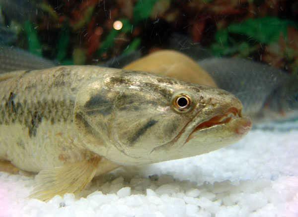
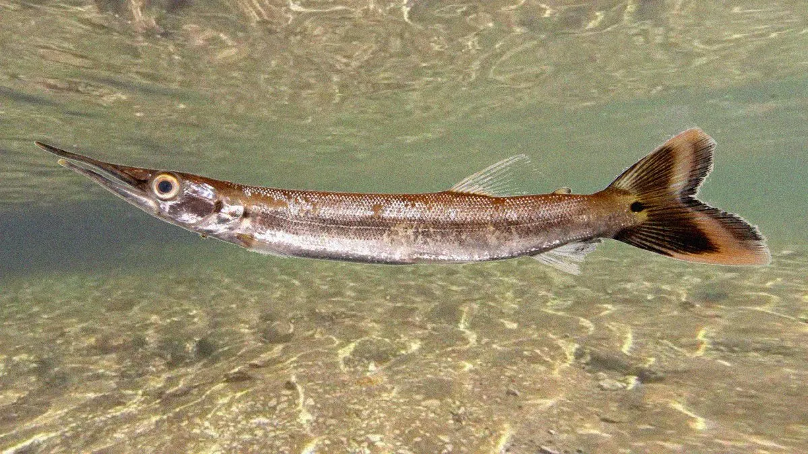
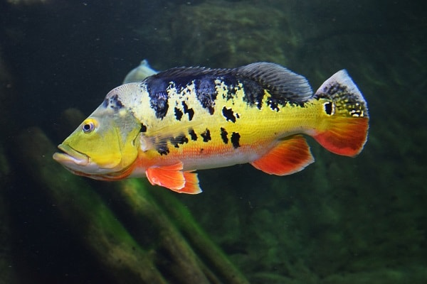

Traíra
-
A Traíra é um peixe de escamas. Possui corpo cilíndrico, boca grande, olhos grandes e nadadeiras arredondadas, exceto a dorsal. Sua coloração é marrom ou preta manchada de cinza. Possui dentes poderosos e afiadíssimos. Sua língua é áspera ao tato, o que a diferencia do trairão, que apresenta a língua lisa. É um peixe utilizado em açudes e represas como controlador de populações demasiadamente prolíficas, como tilápias e piabas. Tem alta resistência a locais com pouco oxigênio. Apesar do excesso de espinhas, em algumas regiões é bastante apreciado como alimento. Pode atingir 60 cm de comprimento e 4 K de peso.

Bicuda
-
O peixe Bicuda é um peixe de escamas, com corpo alongado e roliço. Possui boca grande, pontuda e bastante dura. Sua coloração varia de espécie para espécie, normalmente, o dorso é cinza com os flancos e o ventre prateados. Em seu corpo, há também pintas pretas. Sua nadadeira dorsal está localizada na metade posterior do corpo e seu último raio, assim como na anal, é um pouco mais comprido. Já as nadadeiras pélvica e anal apresentam a margem preta e a caudal uma faixa preta nos raios medianos. O Bicuda pode atingir cerca de 1 m de comprimento total e 6 kg de peso.

Pirarucu
-
Natural da Amazônia, o pirarucu (Arapaima gigas) é um dos maiores peixes de água doce do planeta, podendo ultrapassar 3 metros de comprimento e pesar em torno de 200 quilos. Nos últimos anos, pescadores têm registrado a presença desse “gigante” com cada vez mais frequência no rio Grande, corpo d’água pertencente à bacia do alto rio Paraná que banha os Estados de São Paulo e Minas Gerais.
Tilápia
-
Considerado um peixe domesticado, mas ainda novo no território nacional, apesar de existir mais de cem espécies e subespécies, no mundo, nativas e melhoradas geneticamente, apenas cinco despertam a atenção de pesquisadores, piscicultores e empresários: tilápia do Nilo, Moçambique, azul, rendalli e zanzibar, todas por possuírem características zootécnicas expressivas desejáveis semelhantes, bem definidas.
Tucunaré
-
O Tucunaré é um peixe de escamas, com corpo alongado e um pouco comprimido. Sua coloração e amarelada, com manchas pretas e verticais distribuídas regularmente pelo corpo. Todos os Tucunarés apresentam uma mancha redonda (ocelo) no pedúnculo caudal. É bastante rápido, agressivo, forte e até estúpido. Também é muito sedentário (não realizando migrações). Tem hábitos diurnos. Pode chegar a 30 cm ou mais de 1 m de comprimento total.

Dourado
-
O Dourado é um peixe muito apreciado por seu sabor, sendo conhecido como o “Rei do Rio”. É um peixe de escamas. Cada escama tem um pequeno risco preto no meio, formando linhas longitudinais da cabeça à cauda. Possui uma coloração dourada por todo o corpo, com reflexos avermelhados. Tem uma cabeça grande, com uma boca que alcança a metade desta, repleta de caninos em forma cônica. Possui uma barbatana caudal bastante robusta. Pode atingir mais de 25 kg e alcançar 1m de comprimento.